| 日付 | 2025年11月22日（土） |
|---|---|
| 山域 | 丹沢 |
| メンバー | 単独 |
| 山行形態 | 日帰り |
| アクセス | 車、バス |
| ルート (Map) | 玄倉駐車場 (6:47) - (8:45) ユーシンロッジ - (9:47) 大石山 - (10:51) 同角ノ頭 (11:01) - (11:40) 同角山稜分岐 - (12:03) 檜洞丸 (12:17) - (12:33) 同角山稜分岐 - (14:30) 箒沢公園橋 |
晴れの3連休、久々に丹沢の山に行くことにする。
目を付けたのは同角山稜。以前は玄倉林道が閉鎖されていたが、
今は通れるようになっているようだ。
この機会に一度歩いてみたかった同角山稜を登ってみることにする。
玄倉の駐車場に車を停める。標高330m。
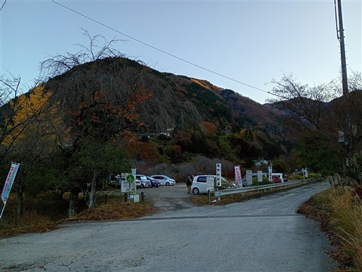
玄倉林道は車両通行止めだ。
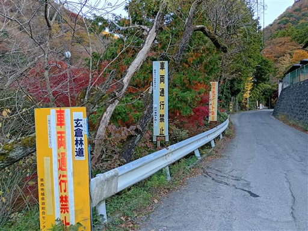
有名なユーシンブルー。きれいな青色だ。
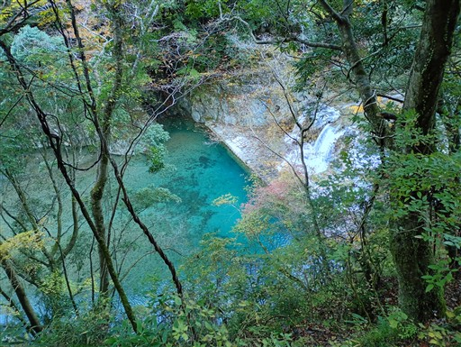
ゲートは開いていたが一般車通行禁止。
通る車の無い道を急ぎ足で歩いていく。
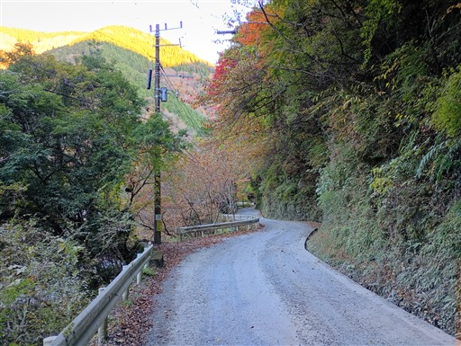
あまり川を見下ろせるポイントは少ないが、ところどころできれいな青色が見られる。
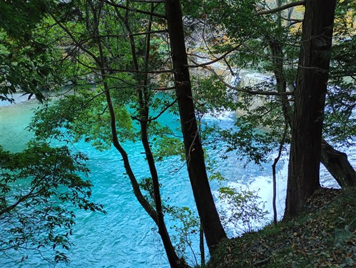
周囲は紅葉が美しい。
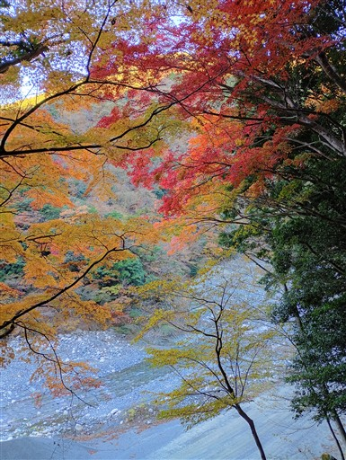
大きなゲート。ここに来て初めて車の侵入を防止するゲートがでてくる。
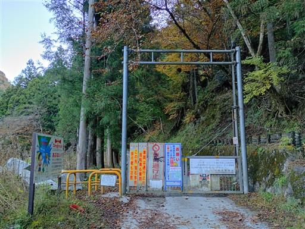
新青崩隧道に到着。
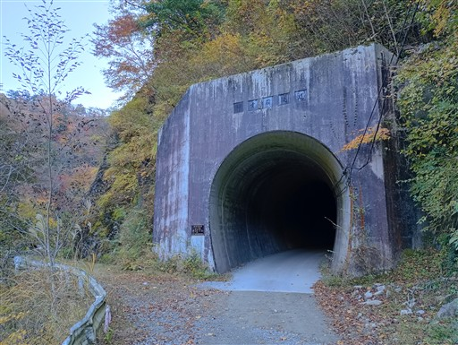
このトンネル、長く、そしてカーブしているため、途中で完全な闇になる。
舗装道路とは言えヘッドライトなしではちょっと怖い。
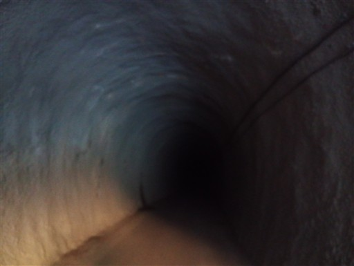
トンネルを抜けた先から見渡す渓谷。
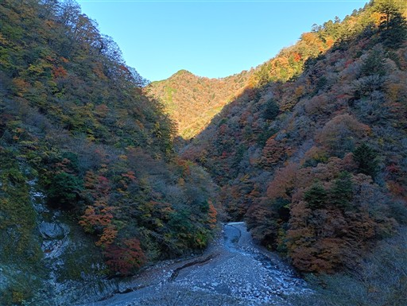
次に現れた隧道は真っすぐなのでヘッドライト不要。
壁面はデコボコだ。
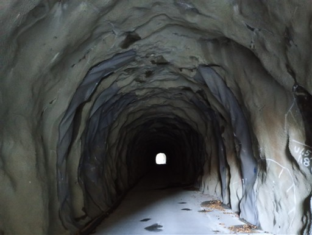
だいぶ渓谷が険しくなってきた。
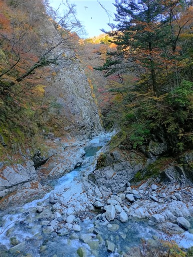
玄倉ダム。水門は開いている。
恐らくここが有名な観光スポットで、水門が閉まっていると水が溜まって
綺麗な青い水が見られる。
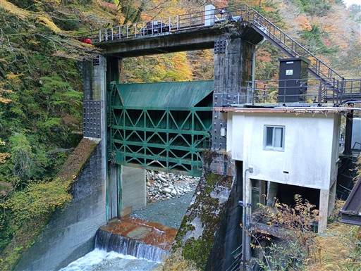
流れている水でも十分きれいだ。
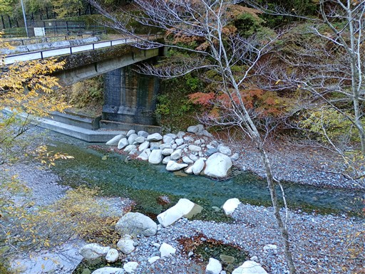
雨山橋。
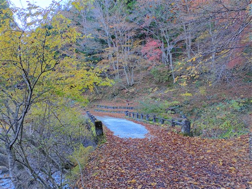
ここから雨山峠を越える道があるのだが、閉鎖されている。
以前、このルートの計画を立てた時は玄倉林道が閉鎖されていて
雨山峠を越えるルートを計画していたが、今では閉鎖されているルートが逆になってしまった。
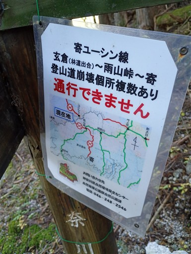
林道は続くが、ここでユーシンロッジに向かうため左折する。
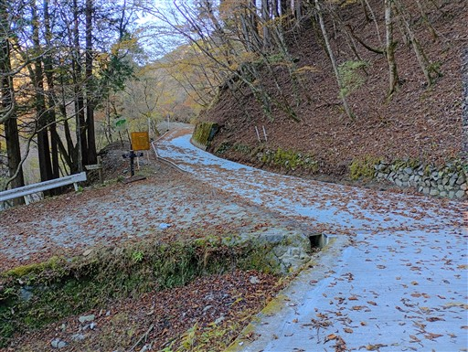
様々な方向を指し示す標識。
ここからは塔ノ岳にも、檜洞丸にも、蛭ヶ岳にも登山道が伸びており、
アクセスが良ければ一大登山基地になっていただろう。
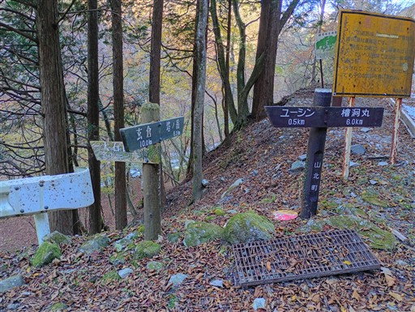
古そうな橋で玄倉川を渡る。
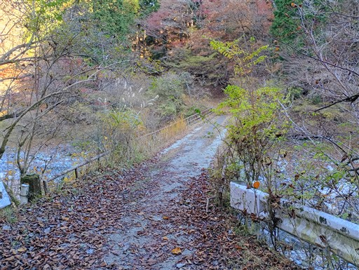
ユーシンロッジに到着。
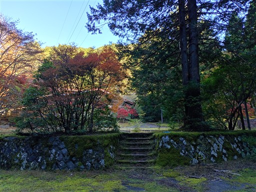
このサークルは何だろう？
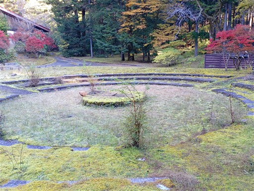
立派な建物。80名が泊まれたらしい。
周囲に人影はなく、静寂が支配している。
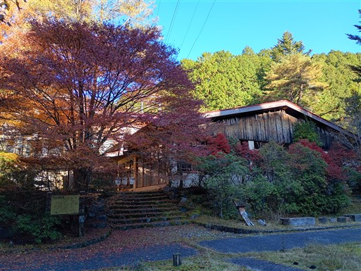
今は休業中。休業というより閉業と言った方が正しいだろう。
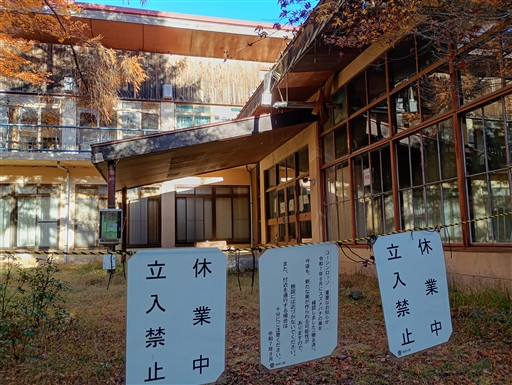
やたら立派な橋で、玄倉川の支流を渡る。
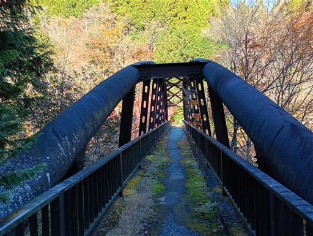
渡った先から登山開始。ストックを出して準備を整える。
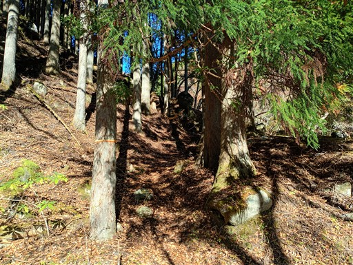
最初は意外にも植林地帯から始まる。
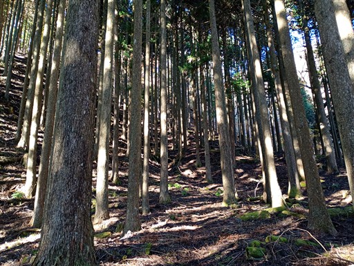
登り始めてすぐの場所に、立派な東屋がある。
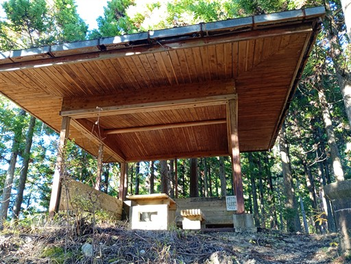
すぐに植林地帯は終わり、登山道は明瞭な尾根道になる。
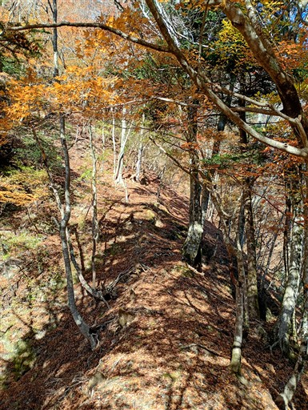
周囲は紅葉に彩られている。
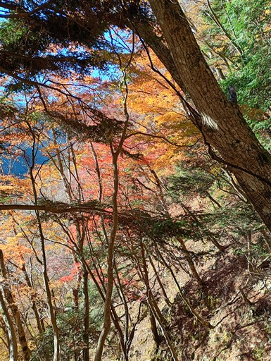
巨大な岩。
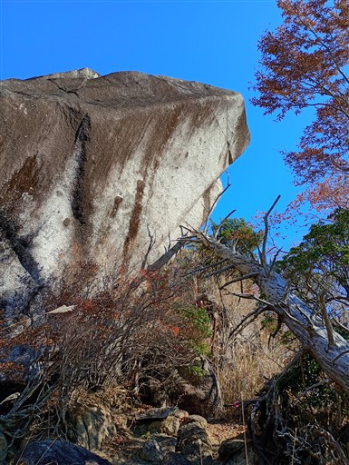
急峻な登山道で、ところどころに梯子がある。
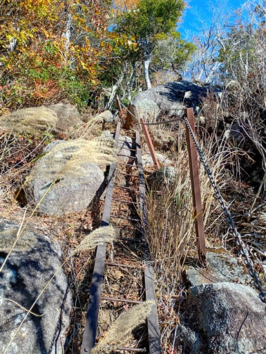
この登山道は立派なブナの木をよく見かける。
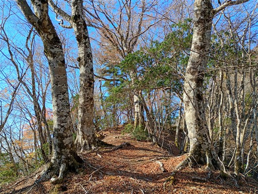
大石山に到着。同角山稜の最初のピークだ。
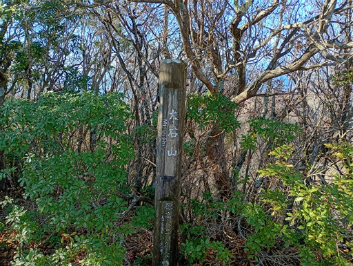
岩の上に立つと素晴らしい展望が広がる。
左に見えているのが丹沢の盟主・蛭ヶ岳だ。
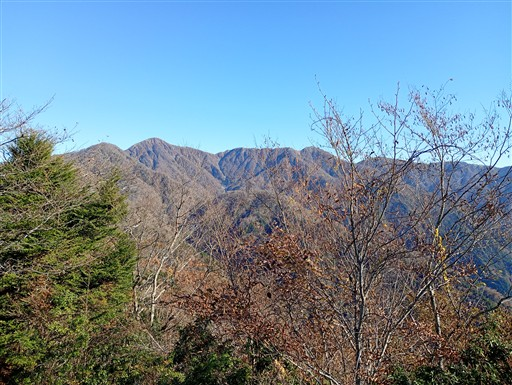
西の方には富士山がきれいに見えている。
もう少し雪が積もった方が美しいのだが、今年は遅いようだ。
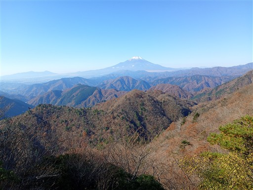
狭い登山道。ちょっと藪がうるさい。

ザレた場所に出てくる。ここで登山者と出会う。
同角山稜で出会った唯一の登山者だ。
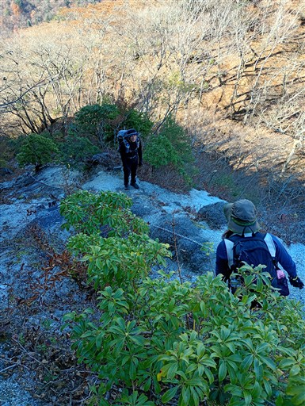
この鎖場が本ルートの一番の難所。
滑りやすい急斜面を下る。
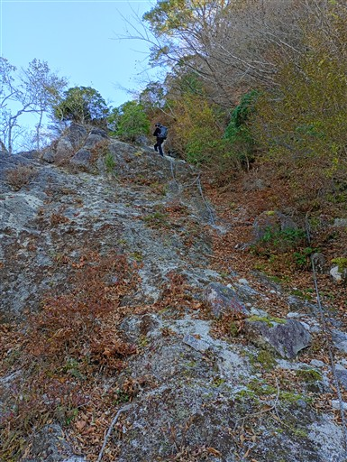
結構な痩せ尾根が続く。
大展望は広がらないが、丹沢の山々や富士山が木の間から見え
歩いていて非常に気分の良い登山道だ。
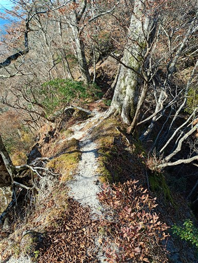
稜線まで急峻な沢が突き上げている。
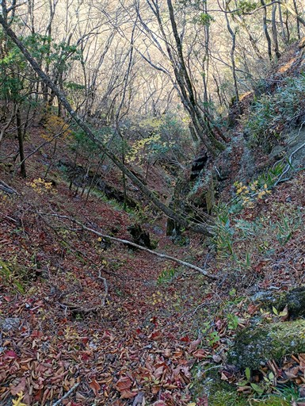
目の前に見えているのは同角ノ頭。この尾根でひときわ目立つピークだ。
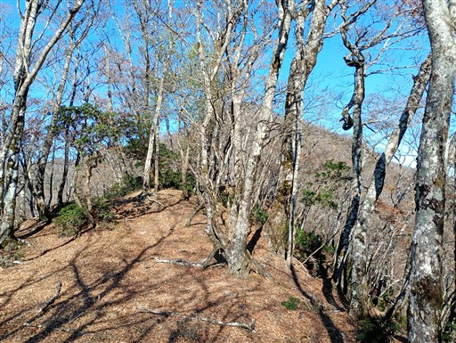
滑りやすい砂が堆積した痩せ尾根。ちょっと嫌らしい。
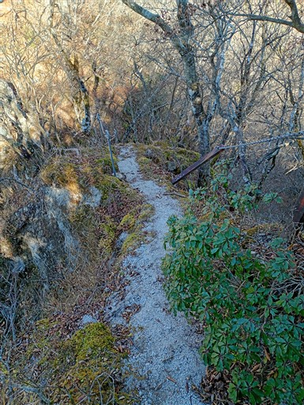
梯子で一気に下る。
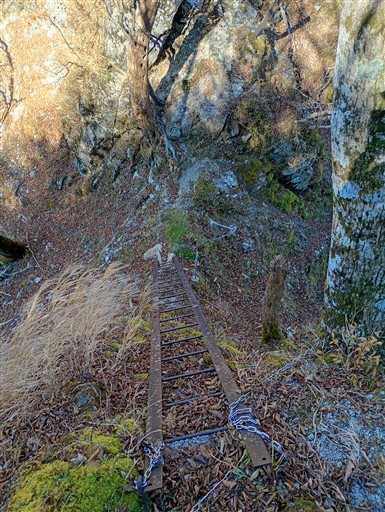
狭い稜線に架かる木橋。
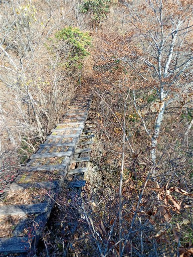
ちょっと藪がうるさい。秋だから良いが春～夏はきつそうだ。
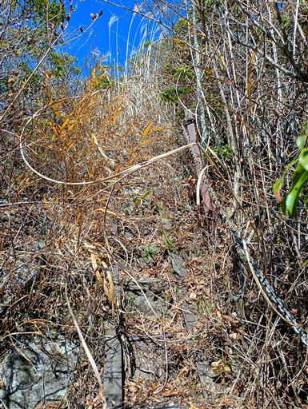
なぜか霧吹きが木の枝に掛けられている。
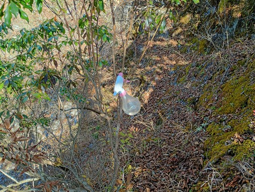
再び展望ポイント。
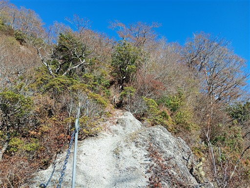
見えるのは丹沢の山々。あまり目立ったピークが無いが、正面は塔ノ岳だろうか？
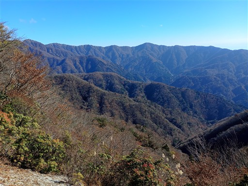
同角ノ頭に到着。左の標識はもはや読むことができない。
ベンチがあるのでここで軽く1回目の昼食休憩。
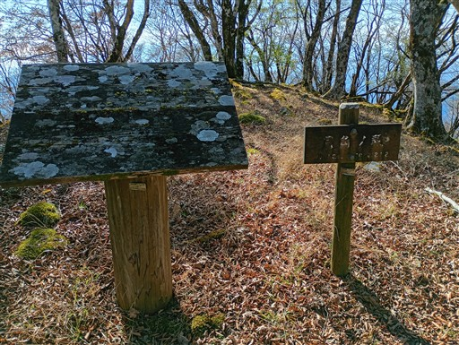
ここから170mほど一気に下る。

同角ノ頭を超えると、檜洞丸が姿を現す。
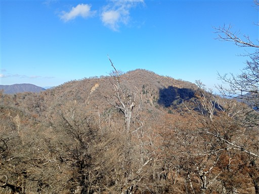
その右には蛭ヶ岳。
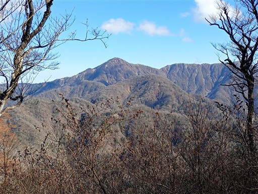
この辺りは木道が整備されている。
木道と大木。
同角山稜分岐に到着する。当初はここから下山する予定だったのだが、
計画よりもだいぶ早く到着したので、ここから檜洞丸を往復することにする。
崩壊地から広がる大展望。右手に見えるのは大室山だ。

富士山は少し雲がかかり始めている。
石棚山稜分岐。西丹沢ビジターセンターからの道と合流し、
ここから一気に登山者が多くなる。
ここからは何度も歩いた道だ。緩やかな木道をゆっくりと登る。
大きな洞をもった木。よく目立つ木で、まだまだ健在だ。
檜洞丸山頂に到着する。標高1601m。
山頂は多くの登山者で賑わっている。
ここで二度目の昼食休憩を取る。
昼食を取ったらバスの時間を確認して下山を開始する。
同角山稜分岐まで引き返したら、ここを直進する。
檜洞丸には何度も登ったが、この道を歩くのは初めてだ。
ブナの木が林立している。
コケに覆われた大木。
玄倉に下る道と箒沢に下る道との分岐点。
玄倉に下ると直接駐車場に行けるのだが、当初の予定通り箒沢への道を進む。
標高を落とすと紅葉が見られるようになってくる。
鎖場。岩場というより砂場だ。砂と落ち葉でよく滑る。
見事な紅葉。
赤から緑のグラデーションが美しい。

沢に下りてくる。ここからは沢沿いの道だ。
この辺りの沢の水もきれいだ。
堰堤を梯子で下る。
橋で対岸に渡るように標識に記載されていたが橋はない。
それでも水量が少ないので楽勝で渡れる。
箒沢公園橋を渡る。
橋から眺める風景。右手はキャンプ場だ。
バス停に到着。標高500m。
バス到着の11分前。完璧なタイムコントロールだ。

バスで玄倉に戻ってくる。
同角山稜は有名なルートだけあって、歩いていて楽しい道だった。
久々の丹沢だったが、丹沢のコースタイムはかなり甘めなのか
予定よりもかなり時間に余裕をもって歩くことができた。